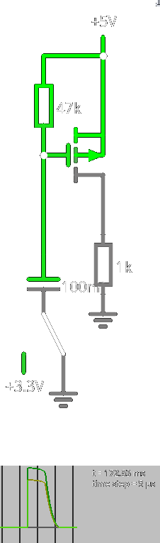

BikeComputer
Table of Contents
1. Schaltplan und PCB
1.1. KiCAD-Setup
Ich nutze die Alternate Kicad Library und die KiCad Library for Arduino Modules für einige Schaltsymbole. Beide Libraries sind über den Plugin and Content Manager im normalen KiCad-Repository verfügbar.
1.2. Spannungsversorgung
Figure 1: Spannungsversorgung 1
1.2.1. Eingehende Spannung / Strom und Fahrrad-Beleuchtung
Der Fahrradcomputer wird parallel zur normalen Beleuchtung geschalten. Die Beleuchtung hat nach Norm theoretisch einen Widerstand von \(12\Omega\), wodurch bei \(500\mathrm mA\) \(6\mathrm W\) entstehen. Außerdem hat ein Rücklicht wohl theoretisch \(60\Omega\) Widerstand. In einer solchen Konstellation habe ich bei den angeschlossenen Geräten jeweils \(5\mathrm V\) anliegen, wenn der Widerstand des Computers bei mehr als \(1\mathrm k\Omega\) liegt. Allerdings liegen dann beim Computer auch nur ein paar mA an. Bei 100% Effizienz hätte man dann aus den \(0.0245\mathrm{W}\) bei \(3.3\mathrm V\) \(7\mathrm{mA}\).
Idealerweise könnte ich den Widerstand des gesamten Computers etwa berechnen, um die möglichen Spannungen und Ströme besser abschätzen zu können.
Figure 2: Spannungen am Fahrraddynamo (vorne, hinten, Computer)
Sollte hier die Beleuchtung ausfallen, kommen am Fahrradcomputer theoretisch ein paar hundert Volt an, die zwar über die TVS-Dioden abgeführt werden sollten, aber das sind bei \(500\mathrm{mA}\) dann auch viele Watt, die man erstmal reinstrampeln müsste… Fällt die Beleuchtung auch aus, wenn ich sie abschalte? Vermutlich schon… Also immer mit Tagfahrlicht fahren?

Figure 3: Überspannung beim Ausfall der Lampen
Ab einem Widerstand von \(60\Omega\) laufen durch den Fahrradcomputer weniger als \(70\mathrm{mA}\), wodurch die ganzen Dioden passen sollten. Auch ist bei diesen geringen Strömen der Spannungsabfall je Diode ziemlich niedrig (schön).
1.2.2. Schutz und Umwandlung zu Gleichstrom
- DONE Kapazitive Kompensation
Ich hatte mal darüber nachgedacht, wie bspw. der Forumslader verschiedene Kondensatoren in Reihe mit dem Dynamo zu schalten, um mehr Leistung zu erhalten. Da aber mein Frontlicht das vermutlich auch tut, kriege ich evtl. damit Probleme.
- TODO TVS-Diode
Die Diode sieht so lange "offen" aus, wie ihre Clamping-Spannung \(V_{C}\) nicht überstiegen wird. Sie kann kurzzeitig \(600\mathrm W\) aushalten und auf Dauer (mit unendlichem Heatsink) \(5\mathrm W\). Der Dynamo gibt leider \(\approx6\mathrm W\) ab, das wäre also problematisch… Hier sollte ich eine so niedrige wie möglich nehmen, da alles dahinter maximal \(V_{C}\) "sehen" kann. Hier ist zudem noch die "reverse standoff voltage" \(V_{R}\) wichtig, bei der die Diode zu leiten anfängt. Das gegebene Modell (SMBJ170CA) hat ein \(V_{C}\) von 275V und ein \(V_{R}\) von \(170\mathrm V\) (daher der Name). Hier wäre ein SMBJ12CA mit \(20\mathrm V\) \(V_{C}\) vielleicht besser, oder noch kleiner, je nach dem, was der Rest aushält…
Auf dem PCB muss die Diode so nah wie möglich an den Anschluss.
Sollte ich manche Pins (siehe weiter unten) auch mit solchen Dioden sichern, bspw. für die externe Spannungsversorgung?
Leider kann man weder bei Digikey noch bei Mouser nach der maximalen Dauerleistung filtern.
- Zenerdioden
Dann wird die Wechselspannung durch die zwei Zenerdioden auf \(\pm8\mathrm V\) begrenzt, da sie eine Zenerspannung von \(6.8\mathrm V\) haben und die Forward Voltage einer Diode max. \(1.2\mathrm V\) (bei \(1\mathrm{mA}\)) beträgt. Siehe Wikipedia.
An sich sieht diese Diode gut gewählt aus. Sie hält bis \(700\mathrm{mA}\) aus, die wir vermutlich nie erreichen. Die max. Reverse Current sind \(10\mathrm{µA}\).
Eine maximale Spannung kann ich nicht erkennen.
Interessanter Weise braucht in der Wikipedia und im Simulator die Begrenzung durch die Zenerdioden einen Widerstand davor. Allerdings kann ich diesen Widerstand ziemlich klein setzen, sodass hier evtl. der Widerstand der Leitung reicht?
- Brücken-Gleichrichter (Schottky-Dioden)
Hier haben wir einen Full Bridge Rectifier. Im ursprünglichen Plan werden Dioden NSR0170HT1G verwendet. Da SOD323 größer als SOD123 ist (was ich schon gelötet habe), könnte ich diese Dioden problemlos verwenden. SOD123 wäre notfalls auch okay, wenn der Platz nicht reicht. Siehe auch hier (SOD123) und hier (SOD323).
Dioden mit geringerem Spannungsabfall wären auch schön, da ich immer die Verluste von zwei Dioden gleichzeitig habe.
Figure 4: Spannungsabfall NSR0170HT1G (\(100\mathrm{mA}\): \(\approx1.2\mathrm V\))
NRVB120VLSFT1G ist z.B. cool (sehr niedriger Spannungsabfall?) kostet aber auch 41ct vs 21ct (ohme MwSt).
Figure 5: Spannungsabfall NRVB120VLSFT1G (\(100\mathrm{mA}\): \(0.275\mathrm V\))
Sie hält auch bis zu \(20\mathrm V\) Rückwärtsspannung aus, sollte also für den Gleichrichter ausreichen. Package ist SOD123-FL (Footprint).
Mit einem Brückengleichrichter als einzelnes Package kriege ich hier nicht weniger Verluste hin. In der Wikipedia heißt es beim Synchrongleichrichter:
Deshalb werden unter anderem in Schaltnetzteilen mit niedriger Ausgangsspannung leistungsstarke Synchrongleichrichter eingesetzt.
Bei dieser Art von Gleichrichtern werden keine Bauteile verwendet, die von sich aus einen Stromfluss nur in eine Richtung zulassen; stattdessen verwendet man MOSFETs, die durch eine Ansteuerelektronik so gesteuert werden, dass sie wie Halbleiterdioden mit sehr kleiner Durchlassspannung wirken.
Beispiel: Prozessoren seit etwa dem Jahr 2000 benötigen Betriebsspannungen von weniger als 2 V, Mobilprozessoren mittlerweile von unter 1 V. Diese Leistung wird im Laptop aus 19 V durch Synchronwandler erzeugt, die MOSFET-Gleichrichter verwenden. Weil der Durchlass-Spannungsabfall bei diesen Bauelementen nur wenige zehn Millivolt beträgt, besitzen diese Gleichrichter einen Wirkungsgrad von deutlich über 90 Prozent und können ohne aktive Kühlung realisiert werden.
Ich habe leider kein Bauteil gefunden, was die entsprechenden MOSFETs bereits enthält. Hier wäre die Frage, ob das viel bringt… Sehr kleine Spannungen habe ich ja (leider). Auch schön, dass die Suche nach "low voltage active voltage rectifier" vor allem Forschungspapiere findet und keine Produkte.
1.2.3. TODO 1. Spannungsregler
Figure 6: 1. Spannungsregler
Hier wird im Originaldesign durch einen MIC5295YD-TR die Spannung von den etwa \(8\mathrm V\) auf etwa \(5.3\mathrm V\) reduziert. Einige Komponenten drum herum werden vom Datasheet verlangt (C3, R13, R14).
Der $0Ω$-Widerstand (R12) ist dabei wahrscheinlich einfach eine normale Leitung?
Ich weiß nicht, warum ich hier dachte, dass dort ein Widerstand ist.
Insbesondere ist die Beschaltung völlig falsch…
Alternativ könnte ich einen Spannungsregler verwenden, der nicht enabled werden muss (VIN und EN sind am selben Eingang). Er muss mindestens \(8\mathrm V\) Eingangsspannung aushalten.
Mögliche Alternativen:
- TPS71501QDCKRQ1 (nur \(50\mathrm{mA}\), weniger Verluste)
- SPX5205M5-L/TR (höhere "Quiescent Current", weniger Verluste)
- TPS7A2401DBVR (\(200\mathrm{mA}\), sehr niedrige "Quiescent Current", wenige Verluste; von dem Modell gibt es eine $5\mathrm V$-Variante)
Hier wird außerdem empfohlen, ein Switched-Mode Power Supply (SMPS) zu nehmen, wenn man Strom sparen will. Allerdings verwendet bspw. der Forumslader kein SMPS.
Wenn ich z.B. von \(8\mathrm V\) auf \(5.3\mathrm V\) runter regle und die maximalen \(150\mathrm{mA}\) ziehe, verbrät der Spannungsregler \(0.4146\mathrm W\). Die muss ich erstmal rein treten…
Je nach dem, wie viel Strom alles braucht, sollte ich vielleicht mehr als \(150\mathrm{mA}\) maximalen Output nehmen, dass der Spannungsregler effizienter ist. Anmerkung: Offenbar ist es bei diesen Spannungsreglern normal, dass der Unterschied zwischen Input und Output einfach als Wärme verbraten wird. Hier könnte ich also höchstens nach weniger Stromverbrauch und weniger Leckstrom schauen.
1.2.4. Kondensator
Figure 7: Kondensator
Im Original wird ein DGH105Q5R5 verwendet. Der \(1\mathrm F\)-Superkondensator soll Energie puffern, sodass auch an der Ampel der Fahrradcomputer funktioniert. Hier wird ein Modell mit bis zu \(5.5\mathrm V\) Spannung verwendet. Das ist eventuell etwas wenig, wenn ich ihn immer auf \(5.3\mathrm V\) aufladen möchte. Auch ist das oben genannte Modell zur Zeit bei Digikey nicht verfügbar.
Wenn ich nach Werten ab \(6\mathrm V\) filtere, kriege ich nur wenige Ergebnisse. Alternativen:
- SCMR22G105SRBA0 (\(7.5\mathrm V\), geringere Lebensdauer, \(2.76\mathrm A\) peak)
Die Zeitkonstante ist \( R\cdot C \), wenn ich also einen \(1\mathrm F\)-Kondensator habe und dahinter \(50\Omega\) Widerstand (kann ich das berechnen?), dann brauche ich 50s für ein τ. Der Kondensator braucht 5τ zum "vollständigen" Laden, also 250s, etwas mehr als 4 Minuten. Jetzt ist noch die Frage, wie lange er zwischen \(5.3\mathrm V\) und \(3.3\mathrm V\) liegt, was für die zweite Spannungsstufe nötig ist. (Achtung: die verwendeten Spannungsregler regeln die Spannung nur runter und nicht hoch.)
Wenn ich hier weiter mit \(50\Omega\) rechne, kann diese Spannung für 23s gehalten werden. Na hoffentlich halte ich da nicht zu oft lange an.
Der Kondensator kann mit einer zweiten Leitung umgangen werden, wenn der Dynamo gerade genug Strom liefert, der Kondensator aber nicht ausreichend geladen ist.
- Widerstände
Die Widerstände sind theoretisch nötig um den Strom, mit dem der Kondensator geladen wird, zu begrenzen. Die hier gegebenen \(50\Omega\) führen bei \(5.3\mathrm V\) zu \(106\mathrm{mA}\). Der Kondensator darf mit max. \(700\mathrm{mA}\) geladen werden. Passt also.
- Dioden
Die Dioden sorgen dafür, dass der Kondensator nicht "nach hinten" sich bspw. durch R13 und R14 entlädt (D10, D11) und dass die Messung vom Kondensator auch nur diesen misst?
1.2.5. Messung Kondensator / VBUS
Figure 8: Messung Kondensator / VBUS
- MOSFETs
Im originalen Design werden zwei MOSFETs verwendet, um jeweils eine Leitung zu schalten, mit der die Spannung des Kondensators und die Spannung der 1. Spannungsstufe gemessen werden kann. Genutzt werden SI2301BDS-T1-E3 P-Channel 2.5V enhancement-mode MOSFETs (Datenblatt). Sie werden aktiv durch die Spannungsversorgung geschlossen. Sollte ich nicht lieber auf Verlangen die Messleitung öffnen, um zu messen und sie dann wieder schließen, damit ich nicht unnötig Strom verbrauche?
Ich würde hier eher ein N-Channel MOSFET nehmen, sodass ich eben das tun kann. Optimalerweise öffnet das direkt bei \(3.3\mathrm V\) (Spannung des Arduino Nano)…
Die MOSFETs sind grundlegend überhaupt nötig, da später mit einem Spannungsteiler die Spannung angepasst wird, und sonst also Strom fließen würde, wenn ich das nicht will.
Wofür sind eigentlich die Kondensatoren und Widerstände an den MOSFETs?

Figure 9: Sie lassen nur kurz das MOSFET leiten.
Aber wenn ich eine unregelmäßige Spannung an dem MOSFET habe, leitet es von Zeit zu Zeit, das ist eigentlich doof. Aber die sollte ich nicht bekommen, da ich dort schon geregelte Spannung habe…
Erklärung des Autors:
To measure the capacitor and bus voltage without loading them too much, they can be momentarily connected to a voltage divider by the P-channel MOSFETs Q2 or Q3 [Anm.: Q1 und Q2 bei mir]. The RC circuit provides the level shifting to turn on the transistors. I got that idea from Mike Harrison's 2017 Supercon badge.
In dem Video wird die Schaltung erklärt, man setzt einfach die Enable-Leitung kurz hoch und der Kondensator hält das MOSFET so lange offen, dass man entspannt messen kann, aber im normalen Zustand keine Probleme mit Verlusten hat.
1.2.6. C9
Wofür ist C9? Einfach nur zum Filtern?
1.2.7. 2. Spannungsregler
Der Pufferkondensator entlädt sich in einen ADP162AUJZ-3.3-R7, der, zwischen \(2.2\mathrm V\) und \(5.5\mathrm V\), \(3.3\mathrm V\) ausgibt. Diese Spannung wird für die \(3.3\mathrm V\)-Schiene und damit die Versorgung aller weiteren Komponenten verwendet.
Anmerkung: nur bei \(≥3.3\mathrm V\) gibt der Spannungswandler auch \(3.3\mathrm V\) aus.
Der originale Autor hat stattdessen einen S-1313C33-M5T1U3 genutzt, der eine kleinere Leckspannung (?) und das selbe Pin-Layout hat. Das Package ist SOT-23-5.
Alternativen:
- TPS7A0233PDBVR (niedriger Ruhestrom, evtl. höhere Verluste)
- TPS7A0333DBVR
1.3. Debug-Messungen
Nach dem originalen Schaltplan existieren drei mögliche Eingänge, die über die analogen Pins des Arduinos gemessen werden können.
- VBUS_MEAS: Hier kann die Spannung gemessen werden, die an dem 2. Spannungsregler anliegt.
- VCAP_MEAS: Hier kann die Spannung gemessen werden, der Kondensator hat. Diese zwei Messungen sind wahrscheinlich praktisch, um den aktuellen "Ladestand" anzuzeigen. Sie sollten auch nicht unnötig Strom verbrauchen, da sie durch die MOSFETs gesteuert werden. Die Spannungsteiler sollte ich prüfen, dass sie die Spannungen möglichst breit streuen und ich so genauer messen kann. Zur Zeit liegt am analogen Eingang jeweils eine Spannung zwischen 0V und 1V an. Allerdings schafft der Arduino bis zu 3.3V.
- VIN: Hier wird die Spannung gemessen, die am 1. Spannungsregler anliegt. Wahrscheinlich wird durch die ständige Verbindung mit GND hier Leistung verloren gehen. Eventuell kann ich das also entfernen.
1.4. Taster
Figure 10: Taster
Auch wenn ich diese Taster nicht nach außen legen möchte, können sie für Einstellungen während des Testens praktisch sein. Der Arduino hat interne Pull-Up-Widerstände, also kann ich mir die externen Widerstände sparen.
Ich habe "normale" Taster, die laut KiCAD offenbar sowas wie PHAP33 Series sind.
Figure 11: Meine Taster
1.5. Messung der Geschwindigkeit
1.5.1. Erwartete Frequenzen
Der Dynamo hat 13 Klauen und sollte also je Rotation 13 volle Wellen ausgeben. Nach dem Gleichrichter sind das also 26 Spannungsspitzen pro Rotation. Ein 16"-Rad hat einen Umfang von etwa 1325mm. Bei \(50 \frac{\mathrm{km}}{\mathrm h}\) sind das \(\frac{26\cdot50 \frac{\mathrm{km}}{\mathrm h}}{1325\mathrm{mm}} = 272.5 \mathrm{Hz}\), also ganz ok. Je nach Qualität der Welle könnte ich so aber auch ziemlich genau die Rotationsgeschwindigkeit messen… Das wird ja noch nicht annähernd "hochfrequent" sein, dass ich beim PCB-Design darauf achten müsste? Wenn ich hier die Antennenlänge für \(545\mathrm{Hz}\) berechne, sind das über hundert Meter.
Und sampeln kann ich vermutlich schnell genug (mind. doppelt so schnell = \(545\mathrm{Hz}\)). Hier hat jemand mit \(38.5\mathrm{kHz}\) gesampelt. Tatsächlich kann ich evtl. sogar nur mit den digitalen Eingängen und Interrupts arbeiten.
1.5.2. Methoden
Die nachfolgenden Methoden sind vom Ersteller des Originalmodells beschrieben.
- Digitale Inputs
Bei dem Erfinder brachte der Dynamo seine erwartete Spannung bereits weit unter \(10\frac{\mathrm{km}}{\mathrm h}\), wodurch er einfach die Spannung mit Widerständen und Begrenzungsdioden an die digitalen Eingänge des Mikrocontrollers angeschlossen hat. Das wäre meiner Meinung die einfachste Lösung.
Figure 12: Digitale Inputs
Hier sollte ich schauen, warum andere Dioden verwendet wurden, als sonst überall.
Vielleicht könnte ich statt hier direkt AC1/2 zu nehmen auch nach den Begrenzungsdioden (D4, D5) "einstechen" und so den Schutz haben, ohne Teile zu verdoppeln. Die hohen Widerstände (\(470\mathrm k\Omega\)) brauche ich aber trotzdem, um den Strom zu begrenzen.
- ADC-Messung
Man könnte die Spannung, die an den digitalen Inputs anliegt genauso gut (evtl. über einen anderen Eingang) analog messen, wobei das evtl. mehr Rechenleistung braucht? Hier erschließt sich mir der Sinn nicht ganz. Wenn ich das nicht tue, könnte ich evtl. VIN und alles was daran hängt entfernen…
Eventuell könnte ich die o.g. digitalen Eingänge auf analog schalten (oder entsprechend doppelt verbinden), wenn die Spannung zu niedrig ist, um über \(\approx1.6\mathrm V\) zu kommen. (Der Arduino braucht mind. \(1.6\mathrm V\) um ein Signal als "hoch" zu erkennen.)
- Vergleicher
Eine Möglichkeit wäre, mit einem Operationsverstärker das Signal des Dynamos in ein Logiksignal umzuwandeln. Der braucht allerdings von extern Strom.
- Fazit
Ich finde die erste Variante eigentlich am Besten, da sie nicht großartig weitere Komponenten benötigt.
- Alternative (Funktioniert nicht)
Eventuell könnte man auch direkt nach dem Gleichrichter messen und so weitere Komponenten sparen? Dafür könnte ich auch die Kondensatoren C5 und C7 entfernen.
Wahrscheinlich brauche ich C5 und C7 aber für den Eingang des ersten Spannungsreglers? Könnte ich die mit einer Diode "abtrennen" und so das ungeglättete Signal messen? Dann habe ich aber den Spannungsabfall…
1.5.3. Vorgehen
1.6. Display
In dem ursprünglichen Projekt wird ein DOGM081-A verwendet, welches bis zu 8 Zeichen anzeigen kann. Das war mir allerdings etwas zu spartanisch, sodass ich zunächst ein altes Nokia-Display angeschaut habe.
Allgemein sollte ein LCD-Display verwendet werden, sodass die Hintergrundbeleuchtung nicht unbedingt nötig ist, und so in jedem Fall der Stromverbrauch reduziert wird.
1.6.1. DONE Nokia 3310/5110 Display

Figure 13: Adafruit Nokia Display
https://cdn-learn.adafruit.com/downloads/pdf/nokia-5110-3310-monochrome-lcd.pdf Das Display löst mit 84x48 Pixeln auf und hat eine Diagonale von 1.5" (45x45mm groß, wahrscheinlich mit Platine?). Es benötigt bis zu \(3.3\mathrm V\) Spannung und verbraucht ca. \(7\mathrm{mA}\) Strom. Eine eventuelle Hintergrundbeleuchtung benötigt auch \(3.3\mathrm V\) und sollte wahrscheinlich einen Widerstand als Strombegrenzung verwenden, sonst ziehen sie \(100\mathrm{mA}\). Das Display wird offenbar über SPI gesteuert. Leider gibt es kaum noch Verkäufer…
1.6.2. DONE DisplayVisions DOGM240-6
Alternativ wollte ich dieses Display verwenden. Es löst mit 240x64 Pixeln auf mit einer Diagonale von 2.3". Es ist ein FSTN positiv transflektives Display, also auch ohne Beleuchtung ablesbar. Mit Hintergrundbeleuchtung brauche ich etwa 41x94x7mm (LxBxH) oder so. Spannungsversorgung ist wieder \(3.3\mathrm V\), mit ca. \(500\mathrm{µA}\) (sic!) Stromverbrauch für das Display und ca. \(10---100\mathrm{mA}\) für die Beleuchtung. Diese Displays werden über SPI gesteuert. Das wäre deutlich angenehmer gegenüber dem Nokia-Display. Bei Digikey gibt es das leider nicht. Verfügbar wären das DOGM128W-6 und DOGM132W-5.
1.6.3. TODO DisplayVisions DOGM128W-6
Figure 14: DOGM128W-6 Display
128x64 Pixel mit Diagonale von 2.3". Nur das gibt es bereits in KiCAD, somit ziehe ich es den anderen vor. Ebenfalls ohne Beleuchtung ablesbar. Es wird mit \(3.3\mathrm V\) Spannung versorgt und braucht \(270\mathrm{µA}\) Strom für das Display.
Das Display ist mit Beleuchtung ca. 44x55x7mm (LxBxH) groß. Es sieht nicht so aus, als könnte ich unter dem Display noch andere kleine Bauteile verlöten. Als Beleuchtung ist z.B. LED55X46-A nötig und braucht max. 40mA. Bernstein als Farbe ist eigentlich nicht schlecht. Ein IO-Pin des Arduino kann aber max. \(10\mathrm{mA}\) ausgeben, also wird es auch so viel (Widerstand zum Begrenzen nehmen).
Interessanterweise wird in der Beispiel-Verschaltung der Pin VOUT über einen \(1\mathrm{µF}\)-Kondensator mit GND verbunden. Hier steht allerdings bei den Pin-Beschreibungen "Voltage Output about +12V". Fließt dann nicht kurzzeitig erstmal beim Start Strom zu Erde, wenn der Kondensator auf \(12\mathrm V\) geladen wird, und wenn ich den Computer abschalte wieder Strom zurück? (Auch muss der Kondensator \(12\mathrm V\) aushalten.)
Display kostet 20€, Beleuchtung ab 7€ (ohne MwSt).
1.7. Controller
Da ich keinen Controller wie im originalen Projekt löten möchte, will ich einen Arduino Nano 33 BLE Sense sockeln. Das hat mehrere Vorteile:
- Stromversorgung und Logik via \(3.3\mathrm V\)
- verschiedene Sensoren direkt auf dem Board
- potentiell BLE für Verbindung mit dem Telefon (Navigation, Zeit, …)
- einfaches Ersetzen bei Problemen
Der Stromverbrauch des Arduino ist schwierig abzuschätzen:
- Im Forum schreibt jemand, dass mit BLE etwa \(1.5\mathrm{mA}\) verbraucht werden (Post #2). Jemand anderes hat im Schlafen 6mA verbraucht (Post #7).
- Hier verbraucht er \(20\mathrm{mAh}\) (sic, Post #2).
- Hier sind es \(200\mathrm{mA}\) (Post #7).
- Hier sind verschiedene Messungen bis max. \(17.4\mathrm{mA}\), bei \(3.3\mathrm V\) max. \(9.49\mathrm{mA}\).
- Hier geht es bis zu \(112\mathrm{mA}\) wenn WiFi genutzt wird (hat der Nano 33 BLE überhaupt WiFi?), oder \(47\mathrm{mA}\) mit BLE.
Wenn man das Board mit \(3.3\mathrm V\) betreiben möchte, kann (?) man die Verbindung zur USB-Spannung durchtrennen. Hier wäre die Frage, ob man das muss, was für das Flashen von Code eventuell doof wäre. Im Datasheet klingt es so:
Das Board hat auch einen Gesten-Sensor, der mir vielleicht Knöpfe erspart, durch die eventuell Wasser eindringen kann.
1.7.1. Programmierung
Grundlegend könnte ich den Arduino über USB programmieren. Da aber für geringeren Stromverbrauch die \(5\mathrm V\)-Versorgung des Arduinos abgeschaltet wird, muss ich ihn währenddessen mit \(3.3\mathrm V\) versorgen (siehe Testpunkte und Pins). Hier heißt es, dass man den Arduino auch über die serielle Schnittstelle (UART) programmieren kann, aber beim Nano 33 Sense ist TX/RX und USB beides direkt mit dem Mikrocontroller verbunden ohne Chip dazwischen.
1.8. Testpunkte und Pins
1.8.1. 3.3V
Da bei durchgeschnittenem \(5\mathrm V\)-Pin der Arduino nicht mehr über USB mit Strom versorgt werden kann und das Flashen über die ICSP-Schnittstelle offenbar relativ fummelig ist (keine Pins), sollte ich die \(3.3\mathrm V\)-Schiene auch von außen versorgbar machen, bspw. über einen Raspberry Pi. Gleichzeitig kann ich so die \(3.3\mathrm V\)-Schiene messen. Sollte die Spannungsversorgung vollkommen ausfallen, kann ich so weiterhin mit dem Arduino arbeiten.
1.8.2. 5V
Alternativ könnte ich direkt via USB \(5\mathrm V\) in den zweiten Spannungsregler einführen und so alles angenehm mit \(3.3\mathrm V\) bestromen ohne ein Netzteil zu brauchen.
1.8.3. GND
Gerne als Pin freilegen, dass der Pi besser bestromen kann und man mit einem Oszi o.ä. besser messen kann.
1.8.4. Eingangsspannung
Die brauche ich wahrscheinlich nicht über Testpunkte freigeben, da ich auch am Kabel messen kann.
1.8.5. Spannung des Kondensators
Zum Debuggen eventuell hilfreich, Testpunkt sollte reichen.
1.8.6. Spannung nach Gleichrichter
Wahrscheinlich zum Debuggen hilfreich, auch hier reicht ein Testpunkt. Letztendlich will ich das in den Arduino geben…
1.9. Gehäuse
Bspw. https://www.conrad.de/de/p/camdenboss-7200-203c-universal-gehaeuse-polycarbonat-grau-transparent-1-st-2694407.html innen max. 108x58x35mm (LxBxH)
Oder https://www.conrad.de/de/p/weidmueller-mpc-12-12-07-trsp-9535240000-universal-gehaeuse-polycarbonat-lichtgrau-transparent-1-st-275712.html innen max. 90x90x60mm (LxBxH)
Vielleicht sollte ich etwas Silica-Gel o.ä. mit rein legen, dass alles schön trocken bleibt?
1.10. Platine
Die Platine sollte natürlich in das Gehäuse passen und die korrekten Bohrungen für die Löcher des Gehäuses haben.
1.10.1. Design
https://old.reddit.com/r/PrintedCircuitBoard/wiki/schematic_review_tips
Hier heißt es, dass man bei einem PCB mit zwei Ebenen alle Komponenten auf einer Seite haben sollte. Entsprechend sollte ich hier aufpassen. Notfalls müsste ich 4 Ebenen nehmen…
1.10.2. Hersteller
- Finish
Wahrscheinlich ist hier ENIG besser, da es weniger oxidiert?
- Vergleich
Siehe auch hier. Die Qualität von OSH Park ist offenbar dort am Besten gewesen.
Preise kann ich natürlich erst berechnen, wenn ich das Design fertig habe.
- OSH Park Aisler beta-layout Eurocircuits Preis pro Platine $5/in² (0.72€/cm²) (für alles) 10€+(0.0525/cm²*Anzahl) teuer… 12€+(0.0840/cm²*Anzahl) (ohne MwSt) (ohne MwSt) Mindestanzahl 3 oder Vielfache von 3 3 1 Versandkosten 0$ (untracked) 0€ (untracked) Lieferzeit 2-4 Wochen ≈2 Tage Herkunft USA Deutschland Deutschland Deutschland/Ungarn Farbe "durchsichtig" oder lila grün Finish ENIG HASL (BB Budget) ENIG (BB HD) Bestückung ist wahrscheinlich eh zu teuer, also sollte ich für selbst-löten designen.